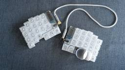
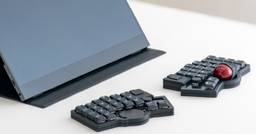
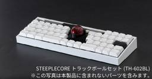
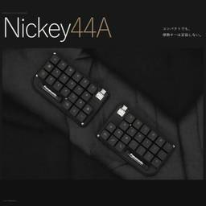
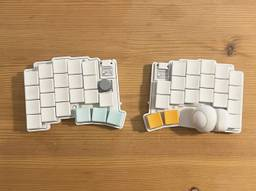
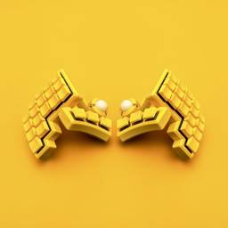
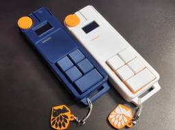
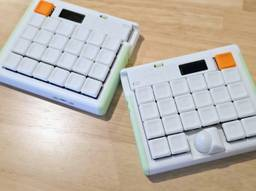
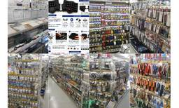

TALPKEYBOARD BLOG
https://www.talpkeyboard.com/
TALPKEYBOARDは、2017年に開業したメカニカルキーボードパーツ専門ショップです。 このブログでは、パーツレビュー・製品比較・技術考察などを中心に、キーボードを楽しむための情報を発信しています。 一部の記事にはアフィリエイトリンクが含まれます。
フィード

Shirogane Lab Keyball＋｜MX/Choc両対応、38/39キーを選べるトラックボール分割キーボード
TALPKEYBOARD BLOG
Shirogane Lab（白銀ラボ）から、トラックボール付き分割キーボード「Keyball＋」が発売されています。Keyball＋はKeyball39をベースにした39キーの左右分割キーボードで、34mmトラックボールを左右どちらかに搭載できます。MX互換スイッチとKailh Choc系ロープロファイルスイッチの両方に対応し、右手側の親指キーを1個切り離して38キーとして組み立てることもできます。2026年9月23日のTOKYO KEYBOARD EXPO 2026で先行販売され、10月23日からShirogane Lab公式ショップで販売されています。価格は24,800円（税込）です。[Keyball＋｜Shirogane Lab](https://shiroganelab.com/products/keyball-plus)
9時間前
「KitaQ Keyboard Meetup vol.1」に参加しました 1
1
TALPKEYBOARD BLOG
2026年10月17日（土）、北九州市小倉で開催された自作キーボードの交流イベント「KitaQ Keyboard Meetup vol.1」に参加しました。リアルなユーザーイベントに参加するのは、ずいぶん久しぶりです。今回は手持ちのちょっと変わったキーボードを持ち込んで展示しつつ、参加者の皆さんとお話しするのが主な目的でした。参加者は約26名。九州北部を中心に、遠くは大阪から来られた方もいらっしゃいました。
2日前

ELEKIT 双掌（SO-SHO）｜トラックボール／トラックパッドを左右に配置できる44キー無線分割キーボード
1
TALPKEYBOARD BLOG
ELEKIT（イーケイジャパン）から、自作キーボード組み立てキット「双掌（SO-SHO） TH-601」が販売されています。双掌は44キーのカラムスタッガード配列を採用した左右分割キーボードです。左右間とPCとの接続を無線化しており、Kailh Choc V2、XIAO nRF52840 Plus、ZMKを使用します。左右外側のポインティングデバイスはモジュール式で、34mmトラックボール、40mmトラックパッド、ブランクモジュールを左右どちらにも取り付けられます。2026年3月28日発売。公式ストアでの販売価格は30,556円（税込）です。[双掌（SO-SHO） TH-601｜ELEKIT](https://www.elekit.co.jp/product/TH-601)
2日前

ELEKIT STEEPLECORE｜GH60互換サイズに中央トラックボール／トラックパッドを備えた49キーユニボディキーボード 1
TALPKEYBOARD BLOG
ELEKITから、自作キーボード組み立てキット「STEEPLECORE（スティープルコア） TH-602」が発売されています。STEEPLECOREは、GH60互換の60%サイズに49キーを配置したユニボディキーボードです。左右のキーエリアの中央に、34mmトラックボールまたは40mmトラックパッドを搭載します。配列は一般的なロースタッガードで、MX互換スイッチのホットスワップ、USB接続、Bluetooth接続に対応します。無線使用時は単4乾電池1本で動作します。2026年9月23日発売。トラックボールセット「TH-602BL」と、トラックパッドセット「TH-602PA」の2種類が用意されています。[STEEPLECORE TH-602｜ELEKIT](https://www.elekit.co.jp/product/TH-602)
2日前

Nickey44A｜最薄6.5mm、単4電池で動く44キー完全無線ロープロファイル分割キーボード 1
TALPKEYBOARD BLOG
PotaMegaから、44キーのロープロファイル無線分割キーボード「Nickey44A」が販売されています。Nickey44Aは、- 44キー- 17mmピッチ- オーソリニア配列- Kailh Choc V2- XIAO nRF52840- ZMK- Bluetooth完全無線- 最薄部約6.5mmという構成の小型分割キーボードです。そして最大の特徴が、電源。一般的な無線自作キーボードでよく使われるLiPoバッテリーではなく、左右それぞれ**単4乾電池1本**で動作します。充電ケーブルも、内蔵バッテリーの充電管理も不要。電池が切れたら交換して、そのまま使い続ける。最新の無線自作キーボードでありながら、電源だけを見ると昔ながらの電子機器のような割り切りが面白い一台です。[Nickey44A キット版｜BOOTH](https://potamega.booth.pm/items/8744351)
3日前

moNa2｜17mmピッチ・25mmトラックボールを備えた42キー完全無線分割キーボード 1
TALPKEYBOARD BLOG
shakupanさんと白湯_sayuさんによる、小型無線分割キーボード「moNa2」。42キー、17mmピッチのロープロファイル構成に、- 25mmトラックボール- ロープロファイルロータリーエンコーダ- ZMK- 完全無線- LEDインジケータ- 背面マグネットをまとめたキーボードです。moNaシリーズには、- moNa：左手側トラックボール- moNa2：右手側トラックボールの2種類があり、基本的な機能は共通。moNa2は、右手親指付近からトラックボールを操作する構成です。[moNa2｜BOOTH](https://shakupan.booth.pm/items/6376654)
3日前

小人キー〖陽〗｜16mmピッチとデュアル19mmトラックボールを備えた40キー無線分割キーボード 2
TALPKEYBOARD BLOG
「いい加減」から、無線分割キーボード「小人キー」の自作キット〖陽〗が販売されています。小人キーは、- 16mmの狭ピッチ- 左右各20キー、合計40キー- 左右それぞれに19mmトラックボール- ロープロファイルスイッチ- Bluetooth接続- ZMK- ケース一体型テンティングを組み合わせた自作キーボードです。一般的な「キーボードにトラックボールを追加した」構成よりも、キーとポインティングデバイスをひとつの操作面としてまとめているのが特徴です。制作者自身も、小人キーと専用キーキャップ「TypeSurfer」を組み合わせた姿を「超多ボタントラックボール」と捉えています。[小人キー 自作キット〖陽〗｜BOOTH](https://iikagen-11.booth.pm/items/7511680)
4日前

KYUREN｜音声入力・トラックパッド・5キー・ノブをまとめたAIワークフローコントローラー 2
TALPKEYBOARD BLOG
そにっく工房から、小型入力デバイス「KYUREN」が登場しました。KYURENは、単純なマクロパッドでも、トラックパッドでもありません。ひとつの小型筐体に、- 音声入力ボタン- 5つの物理キー- トラックパッド- 回転ノブ- ジェスチャー操作をまとめた入力デバイスです。製作者は「VOICE INPUT CONTROLLER」と表現しており、手に持って音声入力に使うほか、キーボードの横へ置いてポインティングデバイスや補助キーとして使うことも想定されています。AIとのやり取りで長い文章を入力する機会が増えてきた現在、キーボードとは少し違う方向から入力環境を組み直した製品です。
4日前

LiTom｜19mmトラックボールと3ロータリー、Agent状態表示OLEDを備えた48キー無線分割キーボード 1
TALPKEYBOARD BLOG
そにっく工房から、48キーの無線分割キーボード **LiTom** が販売されています。LiTomは左右分割・ロープロファイル構成に、19mmトラックボール、3つのロータリーエンコーダ、左右OLED、ZMK、単4電池駆動をまとめたキーボードです。さらにmacOSでは専用アプリを利用することで、OLEDへ**CodexやClaudeのタスク状態を表示**できます。単に入力装置をまとめるだけではなく、AI Agentを使った作業状況まで手元へ持ってくる点が面白い一台です。
4日前

ショップ紹介｜カホパーツセンター 1
TALPKEYBOARD BLOG
カホパーツセンターは、福岡市天神エリアに実店舗を構える電子パーツ専門店です。半導体、スイッチ、コネクター、電子工作キット、マイコン、工具、測定器など幅広い電子・電気部品を取り扱い、通信販売にも対応しています。運営会社のカホパーツセンター株式会社は、嘉穂無線ホールディングス株式会社のグループ企業です。
4日前

Kailh Choc V2 キースイッチ全ラインアップ一覧｜2026年8月版
TALPKEYBOARD BLOG
https://www.talpkeyboard.com/ Kailh Choc V2 ロープロファイルキースイッチは、スタンダードなリニア・タクタイル・クリッキータイプから、静音モデル、Full-POMモデル、ショートストロークモデルなど、多彩なラインアップが展開されています。 Kailhから、2026年8月17日更新の製品一覧資料の提供を受けました。この資料には、キースイッチ31種類が掲載されています。メカニカルキースイッチに加え、磁気式スイッチも収録されています。 この記事では、Kailhから提供されたメーカー資料をもとに、各製品の名称・品番・仕様を日本語で整理します。 なお、今回の一覧…
10日前
Tai-Hao THT ロープロファイルキーキャップセットガイド｜65・98・100キーセット全10種類を紹介
TALPKEYBOARD BLOG
台湾の老舗キーボードメーカー、Tai-Hao（太豪）が開発したロープロファイルキーキャップ「THT（Tai-Hao Thins）」。THTは、Cherry MX互換スイッチ用とKailh Choc V1用を展開する薄型キーキャップシリーズです。PBT素材を使用したキーキャップセットのほか、単品のキーキャップも販売されています。今回は、TALPKEYBOARDで取り扱っているCherry MX互換スイッチ用の65キー、98キー、100キーセット、全10種類を紹介します。
11日前
GMK TriggerKey｜MXスイッチをレバー操作に変え、作動位置と角度を機械的に調整する4キーセット
TALPKEYBOARD BLOG
GMKから、かなり変わったキーボードアクセサリー **TriggerKey** が登場しました。一見すると特殊なキーキャップですが、実際には通常のMX系キースイッチの上へ取り付ける**レバー式の入力機構**です。一般的なキーキャップはスイッチのステムと一緒に垂直方向へ上下します。TriggerKeyでは、キー上面を軸で支えて前後に傾け、その動きを内部の部品を介してスイッチへ伝えます。さらに2本の調整ネジと3種類のStem Capを組み合わせ、- 指が動いてからスイッチが押されるまでの位置- キー上面の傾きを機械的に変更できます。2026年10月6日に発売。4キーセットで49ユーロです。[GMK TriggerKey｜メーカー公式](https://www.gmk.net/shop/en/triggerkey)
12日前
Dygma Sonsei｜56キー・8親指キーを備えたロープロファイル無線ユニボディ分割キーボード
TALPKEYBOARD BLOG
Dygmaから、ロープロファイルのエルゴノミクスキーボード **Sonsei** が登場しています。Dygmaはこれまで、RaiseやDefyなど左右を完全に分離できるキーボードを展開してきました。Sonseiは少し方向が異なります。左右のキー群を角度を付けて配置するsplit-columnarレイアウトを採用しながら、筐体そのものは**一体型（ユニボディ）**。56キー、8つの親指キー、無線接続、ロープロファイルスイッチを、299×140×18.4mm・約393gの薄い筐体へまとめています。[Dygma Sonsei｜メーカー公式](https://dygma.com/products/dygma-sonsei)
13日前
Mistel MD770 PRO｜CNCアルミ・3モード・VIA対応へ進化した83キー分割キーボード
TALPKEYBOARD BLOG
Mistelの左右分離型キーボード「BAROCCO」シリーズに、新モデル **MD770 PRO** が登場しました。日本ではプリンストンから2026年10月2日に発売。英語US配列の83キーで、KTT HyacinthリニアとHMX Peach Pinkサイレントリニアの2モデルが用意されています。今回紹介するのは、静音スイッチを搭載した **HMX Peach Pinkモデル（ML-MD770PRO-US-HM/PP）** です。従来のMD770で使われてきた左右分離型の75%前後のレイアウトを引き継ぎつつ、- フルCNCアルミケース- ホットスワップ- VIA- Bluetooth 5.0- 2.4GHzワイヤレス- USB-C有線- RGBバックライトへ対応。BAROCCOシリーズを、現在のカスタムキーボードに近い仕様へ大きく更新したモデルです。[AmazonでMistel MD770 PRO HMX Peach Pinkモデルを見る](https://link.amazon/B0f0MjB1C)
18日前
TrailNAV｜XIAO ESP32-C6と電子ペーパーで作る太陽光充電式GPSナビ
TALPKEYBOARD BLOG
スマートフォンや通信回線に頼らず、目的地の方角と距離を確認する。そんな用途に絞って作られた電子工作が、Rishabh Jain氏の「TrailNAV」です。2026年5月にHackster.ioで公開された本作は、Seeed Studioの小型マイコン「XIAO ESP32-C6」を中心に、GPS、電子コンパス、電子ペーパー、太陽光充電を組み合わせた携帯型のナビゲーション端末です。[TrailNAV｜Hackster.io](https://www.hackster.io/rishabh-jain5/trailnav-solar-powered-off-grid-exploration-device-bb35b2)
19日前
Raveniung｜REVIUNG34を36キーに再設計、Cirqueを備えた無線ユニボディキーボード
TALPKEYBOARD BLOG
# Raveniung｜REVIUNG34を36キーに再設計、Cirqueを備えた無線ユニボディキーボード自作キーボード開発者のFearlessSpiff氏が、36キーの無線ユニボディキーボード「Raveniung」の設計データをGitHubで公開しています。ベースになったのは、gtips氏が設計した「REVIUNG34」。Raveniungはその名前にも原型を残しながら、小指側のキー配置を変更し、中央に40mmのCirqueトラックパッドを追加しています。さらにnice!nanoとZMKを採用し、無線化しました。単に既存の配列へトラックパッドを追加するのではなく、原型の使い勝手で気になった部分を変更し、自分の用途に合わせて発展させたプロジェクトです。[Raveniung｜GitHub](https://github.com/FearlessSpiff/raveniung)## 原型はgtips氏のREVIUNG34
20日前
Chosfox ロープロファイルキーキャップガイド｜LAK・LCKの取扱4種類を紹介
TALPKEYBOARD BLOG
Chosfoxが展開するロープロファイルキーキャップのうち、TALPKEYBOARDで取り扱っている4種類を紹介します。いずれも52キー構成のPBTキーキャップセットですが、プロファイルやカラー、収録されているキーに違いがあります。
25日前
Visorbearer｜LED表示がセンスあるデザインの32キー無線ユニボディキーボード
TALPKEYBOARD BLOG
自作キーボード開発者carrefinho氏が、32キーの無線ユニボディ分割キーボード「Visorbearer」の設計データをGitHubで公開しています。一体型の筐体に左右分割のキー配列を収め、Kailh Choc V1のホットスワップ、ZMKファームウェア、Seeed Studio XIAO nRF52840 Plusを採用。最大の特徴は、筐体中央付近に配置された左右2本のLEDインジケーターです。消灯中にはLEDが見えず、Bluetooth接続やバッテリーの状態を確認するときだけ、ケース表面に光のバーが現れます。[Visorbearer｜GitHub](https://github.com/carrefinho/visorbearer)
1ヶ月前
Kailh Choc V2 キースイッチガイド｜2026年版｜TALPKEYBOARD取扱18種＋Lofree・Haute42・JezailFunderを比較
TALPKEYBOARD BLOG
ロープロファイルキーボードで採用例が増えている「Kailh Choc V2」。登場当初は比較的シンプルなラインアップでしたが、現在ではスタンダードなリニア・タクタイルだけでなく、静音スイッチ、Full-POM、軽量スプリング、ショートストローク、RGB向け、ゲーミング・レバーレスコントローラー向けなど、かなり多彩な製品が登場しています。さらにKailh自身のラインアップだけでなく、Lofree、Haute42 / COSMOX、JezailFunderなど、各ブランドとの共同開発・カスタムモデルも増えてきました。TALPKEYBOARDでは現在、Kailh Choc V2対応キースイッチを18種類取り扱っています。この記事では、* Kailh Choc V2とは何か* シリーズごとの分類と特徴* TALPKEYBOARD取扱18製品* Lofree、Haute42、JezailFunderなどの関連スイッチ* 荷重・作動点・ストロークの比較* 用途別の選び方という順番で、Choc V2系ロープロファイルスイッチをまとめて紹介します。> ※本記事にはアフィリエイト広告を含みます。TALPKEYBOARDで取り扱っていない製品については、Amazon、AliExpressなどへのアフィリエイトリンクを掲載しています。>> ※製品仕様・互換性は製造時期やバージョンによって変更される場合があります。購入前に各メーカー・販売ページの最新情報をご確認ください。[TALPKEYBOARDのKailh Choc V2一覧を見る](https://shop.talpkeyboard.com/collections/kailh-chocv2)
1ヶ月前
Chosfox Init40 LAK Original Keycap Set｜Init40純正の52キーPBTキーキャップをホワイト／グレーで単体販売
TALPKEYBOARD BLOG
Chosfoxの40%ロープロファイルキーボード「Init40」で使われている純正キーキャップ **LAK Original Keycap Set** を、TALPKEYBOARDで単体販売しています。カラーは、* ホワイト* グレーの2種類。どちらも**52キー構成、PBT素材、昇華印刷**です。Init40本体は42キーですが、キーキャップセット側には配列調整や交換用として追加キーが含まれています。[Chosfox Init40 LAK Original Keycap Set（PBT/ホワイト）](https://shop.talpkeyboard.com/products/chosfox-init40-lak-keycapset-white)[Chosfox Init40 LAK Original Keycap Set（PBT/グレー）](https://shop.talpkeyboard.com/products/chosfox-init40-lak-keycapset-gray)
1ヶ月前
Alibaba「Qwen Book」公開｜QwenをOSレベルに統合した“AIエージェントPC”
TALPKEYBOARD BLOG
Alibabaが、大規模言語モデル「Qwen」を中心に設計した新しいコンピュータ「Qwen Book（QwenBook）」を開発していることが明らかになりました。名前だけを見ると、Qwenを搭載したノートPCのようにも見えます。しかし実際のQwen Bookは、現在一般的に「AI PC」と呼ばれている製品とは少し方向性が異なります。Alibabaが掲げているのは、**「ネイティブAIエージェントコンピュータ」**というコンセプトです。AIアプリをPCに追加するのではなく、AIエージェントがOS、アプリケーション、ファイル、クラウドサービスなどを直接扱える環境を、最初からコンピュータ全体として構築しようとしています。
1ヶ月前
MZ Studio T2 40g｜細かなザラつきを意図的に残したJJK製リニアキースイッチ
TALPKEYBOARD BLOG
今回は、MZ Studioが設計しJJKが製造するリニアキースイッチ **T2 40g** の紹介です。T2は、最近のリニアスイッチでよく重視される「抵抗感をできるだけ減らした滑らかさ」とは少し違う方向で作られています。特徴は、メーカーが「granular texture」と表現する、細かな粒状感のある操作感です。ストローク中にわずかなザラつきを意図的に残しながら、引っ掛かりを強く感じさせない滑らかさも両立することを狙ったスイッチです。TALPKEYBOARDでは、アクチュエーションフォース40gf、ボトムアウトフォース45gfの仕様を取り扱います。[MZ Studio JJK T2 40g｜TALPKEYBOARD](https://shop.talpkeyboard.com/products/mzstudio-jjk-t2-40)
1ヶ月前
東プレ「REALFORCE RS1」正式発表｜79キー日本語配列の左右分割キーボード
TALPKEYBOARD BLOG
東プレのREALFORCEシリーズから、初の左右完全分割型キーボード「REALFORCE RS1」が発表されました。RS1は、従来のREALFORCEで採用されている静電容量無接点方式の静音スイッチを、左右に独立した筐体へ組み込んだモデルです。79キーの日本語配列を採用し、ファンクションキーも搭載。さらに、キー操作によるマウスカーソルの移動やクリック、APCによる入力位置の調整にも対応しています。型番は「S1UJ11」。量販店での掲載価格は55,000円（税込）で、東プレは2026年10月1日の販売開始を目標に調整を進めています。[REALFORCE RS1｜メーカー公式製品ページ](https://www.realforce.co.jp/products/series_rs1.html)
1ヶ月前
AIが「PCの外」に出てきた─画面を見てキーボードとマウスを操作する「Violoop」
TALPKEYBOARD BLOG
Violoopはパソコンから出力された画面をHDMIで受け取り、その画面をAIが読み取ります。そして、USB経由で接続先のパソコンに対してキーボードやマウスとして操作を返します。
1ヶ月前
Planckton｜Cherry MX ULPでPlanckを10u幅まで縮めた超薄型オーソリニアキーボード
TALPKEYBOARD BLOG
今回は、MoinboardsのTechnofrikus氏が製作した自作キーボード **Planckton** の紹介です。Plancktonは、その名前の通りPlanckをさらに小さくしたようなオーソリニアキーボードです。作者自身は「a small version of the Planck in 10u」と説明しており、通常のPlanckより横幅を詰めた**10u幅**のコンパクトな構成になっています。最大の特徴は、一般的なMXやKailh Chocではなく、**Cherry MX Ultra Low Profile（MX ULP）**スイッチを使用していること。赤いCNCアルミケースと超薄型スイッチを組み合わせ、通常の40%キーボードよりさらに薄く、小さく見える一台に仕上げています。2026年9月にはKeyboard Builders' Digest #216でも、Moinboards / Technofrikusによる「Planckの小型・ロープロファイル版」として紹介されています。[Planckton｜Moinboards](https://moinboards.de/projects/planckton/)
1ヶ月前
Delta Omega｜Cherry MX ULP / PG1316S対応、磁石で重ねて持ち運べる34キー無線分割キーボード
TALPKEYBOARD BLOG
Delta Omegaは、**Cherry MX ULPまたはKailh PG1316S**という超薄型スイッチを使う、34キーの無線左右分割キーボードです。配列は3×5＋親指2キー、各列を少しずつ開いたスプレイ＋カラムスタッガード。Seeed Studio XIAO nRF52840を左右に搭載してBluetoothで接続し、CNCアルミケースには磁石を組み込んで、持ち運ぶときに左右を重ねられる構造になっています。完成品や市販キットではなく、PCB、ケース、ZMK設定、ビルドガイドなどをGitHubで公開した自作プロジェクトです。[Delta Omega｜GitHub](https://github.com/unspecworks/delta-omega)
1ヶ月前
ショップ紹介｜Shirogane Lab
TALPKEYBOARD BLOG
Shirogane Lab（白銀ラボ）は、トラックボールを内蔵した左右分割型キーボード「Keyball」シリーズの開発元が運営する自作キーボード専門ショップです。岐阜県飛騨市を拠点に、Keyball39、Keyball44、Keyball61などの自作キーボードキット、関連パーツ、キースイッチ、電子部品などを販売しています。公式サイトでは、2022年1月に国内で2例目の自作キーボード専門店としてスタートしたとしています。Keyballはキーボードとトラックボールを一体化したシリーズで、現在は39キー、44キー、61キーの3モデルを展開しています。キット販売だけでなく、はんだ付け・組み立て・ファームウェア書き込み・動作確認までを行う組み立て代行サービスも提供しています。2026年にはキースイッチやKeyball保守パーツの一般販売を拡大したほか、Keyball専用キーマップエディタ「Keyball Link」を公開しています。ハードウェア販売だけでなく、Keyballの設定・保守を含めたサポート環境も展開しています。
1ヶ月前
Leonardo KeycapRio v0.6｜Choc V1/V2対応へ進化した一枚基板テンティング・ユニボディキーボード
TALPKEYBOARD BLOG
今回は、Stephan Møller氏（Rollercole）が公開している自作キーボードプロジェクト **Leonardo KeycapRio v0.6** の紹介です。左右分割に近いエルゴノミクス配列を、左右に物理的に分離せず、1枚のPCBへまとめたユニボディ型。中央部を持ち上げる3Dプリント製ケースによって固定テンティングを付け、v0.6ではKailh Choc V1 / V2のロープロファイルスイッチへ対応しています。初期版はMXスイッチ向けでしたが、複数回の改良を経て、PCB生成方法、ケース固定、スイッチ対応、キー配置までかなり変化しています。2026年8月30日にはKeyboard Builders' Digest（KBD.news）でもv0.6が紹介されました。
1ヶ月前
Flick KBD｜名刺サイズの基板でPCにフリック入力する静電容量式USBキーボード
TALPKEYBOARD BLOG
今回は、スイッチサイエンスのマーケットプレイスで販売されている **Flick KBD** の紹介です。Flick KBDは、スマートフォンで一般的なフリック入力をPCでも使えるようにした、名刺サイズのUSBキーボードです。メカニカルスイッチやタクトスイッチを並べたキーボードではなく、基板上の静電容量式タッチ領域を使って入力します。かな、英字、数字の3モードに対応し、PCとはUSB Type-Cで接続。価格は1,000円（税込）です。
1ヶ月前